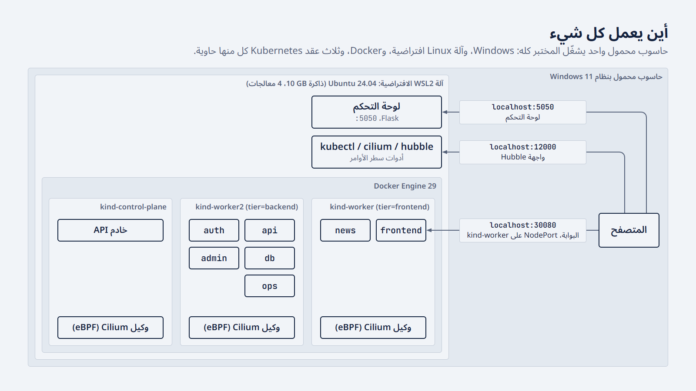
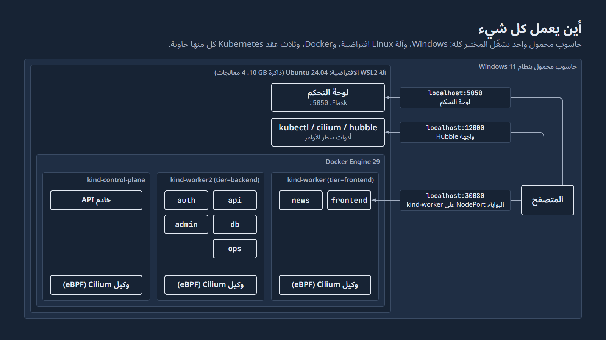
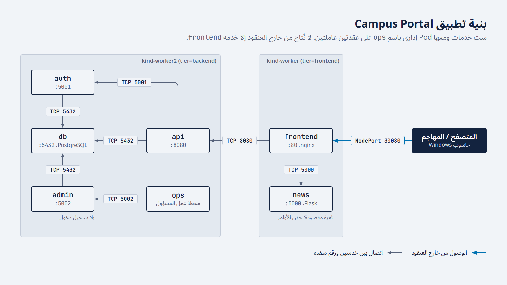
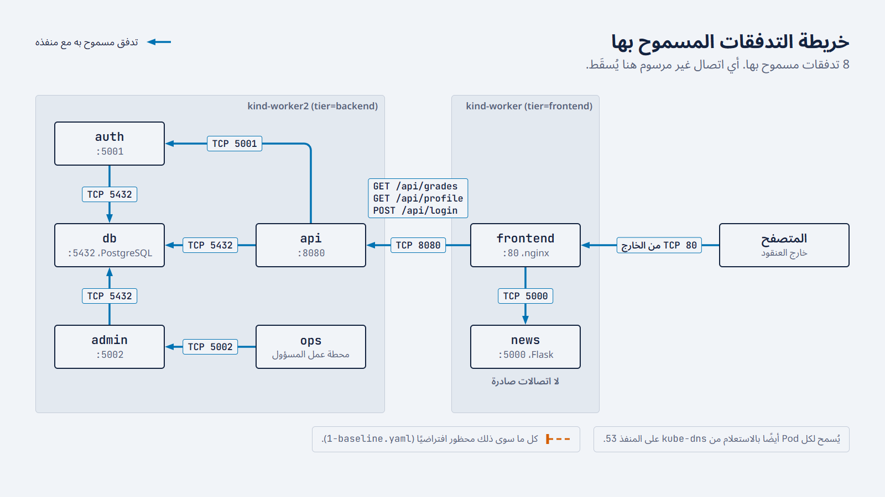

الفصل 1. ما الذي سنبنيه
لا نكتب في هذا الفصل أي أمر، فهو جولة في المختبر على الورق. وفي نهايته يجب أن نستطيع رسم برامج البوابة السبعة على عُقدها، وأن نكتب من الذاكرة التدفقات الشبكية (flows) الثمانية التي تبقى مفتوحة بعد تفعيل التجزئة الدقيقة للشبكة (micro-segmentation). هذا الرسم هو نقطة التحقق. نخصص للفصل نحو 45 دقيقة.
أين يعمل كل شيء، طبقة فوق طبقة
يعمل كل ما في المختبر على حاسوب محمول واحد هو حاسوبنا، في طبقات بعضها فوق بعض. يشغّل Windows 11 نظام WSL 2، وهو آلة افتراضية (virtual machine) خفيفة فيها نواة Linux حقيقية، ويعمل Ubuntu 24.04 داخلها. ويشغّل Ubuntu برنامج Docker Engine، وفيه ثلاث حاويات (containers) تتظاهر كل واحدة منها بأنها حاسوب كامل. هذه الحاويات هي عُقد Kubernetes الثلاث (nodes) في مختبرنا، kind-control-plane وkind-worker وkind-worker2، وعليها تعمل Pods البوابة في مساحة الأسماء (namespace) campus، إلى جانب الـPods الخاصة بـCilium في مساحة الأسماء kube-system.



في الشكل 2 ننظر إلى موقع kubectl وcilium وhubble. هذه الأدوات تعمل في Ubuntu نفسه، خارج العنقود (cluster)، وتمدّ يدها إليه من هناك.
ليس كل برنامج في هذا المشروع داخل العنقود. يبيّن الجدول ما سنفتحه أو نشغّله، وأين يعمل كل منها.
| ماذا | أين يعمل | كيف نصل إليه |
|---|---|---|
| بوابة الحرم الجامعي (Campus Portal) | سبعة Pods في مساحة الأسماء campus |
http://localhost:30080 في متصفح Windows، أو من طرفية Ubuntu (terminal) |
| واجهة Hubble (Hubble UI) | الـPods الخاصة بـCilium، وتُفتح بالأمر cilium hubble ui في طرفية Ubuntu |
http://localhost:12000 |
| لوحة التحكم (dashboard) التي نبنيها (الفصل 7) | برنامج Python في Ubuntu، خارج العنقود | http://localhost:5050 |
kubectl وcilium وhubble |
Ubuntu | طرفية Ubuntu |
| أوامر الهجوم الخمسة (الفصل 8) | Windows PowerShell، باستخدام curl.exe |
تدخل عبر localhost:30080 مثل أي زائر |
يستطيع متصفح Windows أن يفتح localhost:30080 بفضل خطوتَي تمرير. ربط المنافذ قاعدة تمرّر الاتصالات الواصلة إلى منفذ (port) في جهاز ما إلى منفذ في جهاز آخر. لدى Docker ربط منافذ يمرّر المنفذ 30080 في Ubuntu إلى المنفذ 30080 في الحاوية kind-worker، أما WSL فيمرّر منافذ localhost من Windows إلى Ubuntu. ولو تتبّعنا طلباً واحداً من المتصفح إلى البوابة لوجدناه يمر بالمراحل التالية.
- يتصل المتصفح بـ
localhost:30080على Windows. - يسلّم WSL الاتصال إلى Ubuntu، وما زال على المنفذ 30080.
- يمرّره ربط المنافذ في Docker، وهو الربط الذي يطلبه الملف
kind-config.yaml، إلى المنفذ 30080 على العقدةkind-worker. - على العقدة
kind-workerيكون المنفذ 30080 هو منفذ NodePort التابع للـService المسمّىfrontend، لذلك يمرّر Kubernetes الاتصال إلى الـPod الخاص بـfrontend على المنفذ 80.
يستمع ربط المنافذ على العنوان 127.0.0.1 وحده، وهو العنوان الذي يستخدمه الجهاز للإشارة إلى نفسه، فلا يستطيع غيرنا من المتصلين بشبكة Wi-Fi نفسها أن يفتح بوابتنا.
بنية البوابة
للبوابة باب واحد فقط من الخارج، هو NodePort 30080 على kind-worker. أما بقية البرامج فلكل منها اسم ومنفذ لا يعملان إلا داخل العنقود.


يضع الشكل 3 الـPods السبعة على العقدتين العاملتين، ويدخل إليها سهم واحد عند NodePort 30080. ولا يعمل أي منها على العقدة kind-control-plane.
يعمل frontend وnews، وهما الجزء المواجه للجمهور من البوابة، على kind-worker، أما الخمسة الأخرى (api وauth وdb وadmin وops) فتعمل على kind-worker2. وسما العقدتين (node labels) tier=frontend وtier=backend هما ما يحدد هذا التوزيع. ومكان الـPod وحده لا يمنح أي اتصال ولا يمنعه.
تقع كل كائنات Kubernetes الخاصة بالبوابة في مساحة الأسماء campus، وهي من أربعة أنواع.
| الكائن | العدد | الأسماء | الغرض منه |
|---|---|---|---|
| Secret | 1 | db-credentials |
مستخدم قاعدة البيانات وكلمة مروره واسم قاعدة البيانات |
| ConfigMap | 2 | frontend-files وdb-init |
إعدادات nginx وصفحة البوابة، وأوامر SQL التي تملأ قاعدة البيانات |
| Service | 6 | frontend وnews وapi وauth وdb وadmin | اسم ثابت ومنفذ ثابت لكل برنامج يستدعيه برنامج آخر |
| Deployment | 7 | frontend وnews وapi وauth وdb وadmin وops | يُبقي Pod واحداً من كل برنامج قيد التشغيل |
الـConfigMap كائن في Kubernetes يحمل ملفات أو إعدادات ويسلّمها إلى Pod، فيراها الـPod ملفات عادية. بهذا يعمل nginx وPostgreSQL من صور حاويات (container images) جاهزة، وتُضاف ملفاتنا إليها من الخارج. والـSecret هو الفكرة نفسها لكلمات المرور.
يحمل الـSecret المسمّى db-credentials القيم POSTGRES_USER=postgres وPOSTGRES_PASSWORD=postgres وPOSTGRES_DB=campus. يقرأ Pod قاعدة البيانات db هذا الـSecret ليهيّئ نفسه، وتقرؤه البرامج api وauth وadmin لتسجّل الدخول إلى قاعدة البيانات. أما news فلا يحصل عليه أبداً. وكلمة المرور الشائعة postgres موجودة عن قصد، لأن المتسلل يخمّنها في الخطوة 3 من الهجوم.
يحمل الملف k8s/app.yaml الـSecret والـServices والـDeployments. أما كائنا الـConfigMap فينشئهما deploy.sh مباشرة من الملفات الموجودة في frontend/ وdb/. نكتب k8s/app.yaml وdeploy.sh في الفصل 6، والملفات التي في frontend/ وdb/ في الفصل 5.
البرامج السبعة
أربعة من البرامج مكتوبة بلغة Python باستخدام Flask، وهي مكتبة Python صغيرة لبناء خدمات الويب. ويشغّل كلاً منها gunicorn، وهو برنامج يشغّل خدمة Flask على هيئة خادم ويب ويُبقي منها نسختين جاهزتين للطلبات. تحمل الصورة campus-app:1.0 البرامج الأربعة كلها. يعمل منها api وauth وadmin، ويختار الـDeployment الخاص بكل منها البرنامج الذي يشغّله. ويستخدمها ops أيضاً، مكاناً نشغّل فيه الأوامر. أما news فله صورته الخاصة، campus-news:1.0، وهي campus-app:1.0 مضافاً إليها أداتا المهاجم psql وnc. ويعمل frontend وdb من صور جاهزة.
| البرنامج | الصورة | المنفذ | العقدة | ما يفعله | من يستدعيه بعد التجزئة |
|---|---|---|---|---|---|
| frontend | nginx:1.28 |
80، وNodePort 30080 | kind-worker | يرسل صفحة البوابة إلى المتصفح، ويمرّر طلبات /api/ إلى api وطلبات /news إلى news |
المتصفح (world) |
| news | campus-news:1.0 |
5000 | kind-worker | يعرض 3 إعلانات ويشغّل أداة فحص روابط الصور، وفيها ثغرة حقن الأوامر (command injection) | frontend |
| api | campus-app:1.0 |
8080 | kind-worker2 | تسجيل الدخول والملف الشخصي والدرجات للطلاب الذين سجّلوا الدخول، ومعها المسار المنسي /api/export |
frontend |
| auth | campus-app:1.0 |
5001 | kind-worker2 | يتحقق من كلمات المرور، ويُصدر رموز الدخول، ويخبر بالطالب صاحب كل رمز | api |
| db | postgres:17 |
5432 | kind-worker2 | قاعدة بيانات PostgreSQL المسمّاة campus، وفيها الطلاب والدرجات والجلسات |
api وauth وadmin |
| admin | campus-app:1.0 |
5002 | kind-worker2 | لوحة إدارة داخلية تعرض كل المستخدمين، من دون تسجيل دخول | ops |
| ops | campus-app:1.0 |
لا يوجد | kind-worker2 | ينوب عن حاسوب الصيانة لدى فريق تقنية المعلومات. يشغّل sleep infinity، أي ينتظر إلى الأبد، ليبقى لدينا Pod نشغّل فيه الأوامر |
لا أحد |
لـops كائن Deployment وليس له Service، لأن أحداً لا يستدعيه. هو يستدعي غيره فقط.
التدفقات الثمانية المسموح بها
التدفق الشبكي نوع واحد من الاتصالات يسمح به المختبر، من برنامج إلى آخر على منفذ واحد. بعد تفعيل التجزئة يسمح المختبر بالتدفقات الثمانية المذكورة أدناه بالضبط، ويرفض كل ما عداها. سنعود إلى هذا الجدول مرتين أخريين. فالفصل 9 يعيد بناءه مما يسجّله Hubble، والفصل 10 يحوّل كل صف فيه إلى قواعد سياسة.


في الشكل 4 يمثّل كل سهم تدفقاً واحداً مسموحاً به، ولا يبدأ أي سهم عند news أو عند db.
| # | من | إلى | المنفذ | قاعدة إضافية | لماذا تحتاجه البوابة |
|---|---|---|---|---|---|
| 1 | المتصفح (world) |
frontend | 80، عبر NodePort 30080 | يفتح الطلاب البوابة | |
| 2 | frontend | api | 8080 | GET /api/grades وGET /api/profile وPOST /api/login فقط |
تسجّل الصفحة دخول الطلاب وتعرض ملفاتهم الشخصية ودرجاتهم |
| 3 | frontend | news | 5000 | تعرض الصفحة الإعلانات، ويستخدم المحررون أداة فحص الصور | |
| 4 | api | auth | 5001 | يمرّر api كل تسجيل دخول إلى auth، ويسأله عن صاحب رمز الدخول في كل طلب للملف الشخصي أو الدرجات | |
| 5 | api | db | 5432 | يقرأ api صفوف الملف الشخصي والدرجات | |
| 6 | auth | db | 5432 | يتحقق auth من كلمات المرور، ويخزّن رموز الدخول ويبحث عنها | |
| 7 | admin | db | 5432 | تقرأ لوحة الإدارة قائمة المستخدمين | |
| 8 | ops | admin | 5002 | يفتح موظفو تقنية المعلومات لوحة الإدارة |
التدفق 2 هو الوحيد الذي له قاعدة على طبقة التطبيقات (الطبقة السابعة، L7)، وهي المكتوبة في عمود القاعدة الإضافية. يقرأ Envoy كل طلب يمر في هذا التدفق ويسمح بثلاثة أنواع منها فقط. وكل ما عداها، ومنه /api/export، يعود بالرد 403 Forbidden.
هناك نوعان آخران من الحركة مسموح بهما، ولا يُعدّان من التدفقات الثمانية. يحق لكل Pod أن يسأل kube-dns، خدمة DNS في العنقود، عن العناوين على المنفذ 53، لأن البرامج يجد بعضها بعضاً بالاسم، مثل api.campus.svc.cluster.local. هذا هو الاسم الكامل الذي يعطيه Kubernetes للـService: اسمه، ثم مساحة الأسماء، ثم svc.cluster.local. وداخل مساحة الأسماء يعمل الاسم القصير api أيضاً، وهو الذي تستخدمه ملفات المشروع، فلا نكتب الصيغة الطويلة أبداً. ويحق للعقدة كذلك أن تصل إلى كل Pod لإجراء فحوص الجاهزية المشروحة بعد جدول الـAPI. والأمران كلاهما مضبوطان في k8s/policies/1-baseline.yaml.
يحتاج كل صف من الصفوف 2 حتى 8 إلى قاعدتين: قاعدة حركة صادرة (egress) في سياسة البرنامج الذي يبدأ الاتصال، وقاعدة حركة واردة (ingress) في سياسة البرنامج الذي يستقبله. أما الصف 1 فتكفيه قاعدة واحدة، هي قاعدة الحركة الواردة في سياسة frontend، لأن world ليس Pod وليست له سياسة خاصة به. يبدأ الصف 1 من المتصفح، خارج العنقود. ومصفوفة قابلية الوصول (reachability matrix) في لوحة التحكم في الفصل 7 لا تعدّ إلا المسارات التي تبدأ من Pod، لذلك تغطي التدفقات من 2 إلى 8، وتُظهر بعد التجزئة 7 مسارات مفتوحة من أصل 36.
كل ما ليس في الجدول مرفوض. لا يفتح news أي اتصال سوى استعلامات DNS، وكذلك قاعدة البيانات. يصل frontend إلى api لكنه لا يصل إلى auth ولا db ولا admin، ولا يفتح لوحة الإدارة إلا ops، ولا يستطيع أي Pod أن يصل إلى الإنترنت. ويدوّن الفصل 9 هذا الرفض في جدول المنع.
قاعدة البيانات
في قاعدة البيانات campus ثلاثة جداول. ولغة SQL هي اللغة التي ننشئ بها الجداول ونطرح بها الأسئلة على قاعدة البيانات. الجدول بيانات مرتّبة في خانات، والعمود حقل واحد مسمّى فيه، مثل username، والصف سجل واحد، مثل طالب واحد. والمفتاح الأساسي هو العمود الذي تختلف قيمته من صف إلى آخر، فيدل على صف واحد بعينه. أما المفتاح الأجنبي فعمود يحمل المفتاح الأساسي لجدول آخر، وبه تشير الدرجة إلى الطالب الذي تخصه. وتعني SERIAL أن قاعدة البيانات ترقّم الصفوف الجديدة بنفسها، 1 ثم 2 ثم 3 وهكذا.
هذا هو جدول الدرجات منسوخاً من db/init.sql. سنلصق الملف كاملاً في الفصل 5.
CREATE TABLE grades (
id SERIAL PRIMARY KEY,
student_id INT REFERENCES students(id),
course TEXT NOT NULL,
grade INT NOT NULL
);العبارة REFERENCES students(id) تجعل student_id مفتاحاً أجنبياً. والنوع TEXT يحمل الكلمات، وINT يحمل الأعداد الصحيحة، أما NOT NULL فتعني أن العمود لا يجوز أن يبقى فارغاً أبداً.
| الجدول | الأعمدة | ما يمثّله الصف |
|---|---|---|
students |
id (مفتاح أساسي)، username (لا يتكرر)، full_name، email، major، year، password_hash |
طالب واحد |
grades |
id (مفتاح أساسي)، student_id (مفتاح أجنبي يشير إلى students)، course، grade |
درجة واحدة في مادة واحدة |
sessions |
token (مفتاح أساسي)، student_id (مفتاح أجنبي يشير إلى students)، created_at |
تسجيل دخول واحد |
الهاش (hash) بصمة ثابتة الطول تُحسب من نص ما، وقد صُمّمت بحيث لا يمكن استرجاع النص منها. يحمل العمود password_hash هاش SHA-256 لكل كلمة مرور، مكتوباً في 64 محرفاً ست عشرياً، أي أن كل محرف منها رقم من 0 إلى 9 أو حرف من a إلى f. ولا تُخزَّن كلمة المرور الأصلية أبداً. وكلمة المرور الواحدة تعطي دائماً الهاش نفسه، وهكذا يتحقق auth من تسجيل الدخول. فهو يحسب هاش كلمة المرور المكتوبة، ثم يبحث عن صف فيه اسم المستخدم وهذا الهاش معاً.
يملأ الملف db/init.sql الجداول بأربعة طلاب. كلمة مرور كل منهم هي اسم المستخدم متبوعاً بـ2026.
id |
username |
full_name |
major |
year |
كلمة المرور |
|---|---|---|---|---|---|
| 1 | sara | Sara Ahmed | Computer Science | 4 | sara2026 |
| 2 | omar | Omar Khalid | Information Security | 3 | omar2026 |
| 3 | lina | Lina Hassan | Software Engineering | 2 | lina2026 |
| 4 | yousef | Yousef Ali | Computer Networks | 4 | yousef2026 |
ويضيف الملف كذلك 8 درجات، درجتين لكل طالب.
id |
student_id |
course |
grade |
|---|---|---|---|
| 1 | 1 | Network Security | 91 |
| 2 | 1 | Cloud Computing | 88 |
| 3 | 2 | Network Security | 58 |
| 4 | 2 | Databases | 64 |
| 5 | 3 | Network Security | 77 |
| 6 | 3 | Operating Systems | 82 |
| 7 | 4 | Network Security | 69 |
| 8 | 4 | Cloud Computing | 73 |
ننظر إلى صف الدرجات رقم 3. قيمة id فيه 3، وقيمة student_id فيه 2، والطالب 2 هو عمر، فهذه درجته في Network Security، وهي 58. تشغّل الخطوة 4 من الهجوم الأمر UPDATE grades SET grade = 95 WHERE id = 3، وهو يختار صف الدرجات الذي قيمة id فيه 3. ولا يمسّ الطالب 3، لينا. في كلٍّ من الجدولين صفٌّ قيمة id فيه 3، فلا نخلط بينهما.
يبدأ جدول sessions فارغاً، وكل تسجيل دخول يضيف إليه صفاً. يحتفظ Pod قاعدة البيانات ببياناته داخل حاويته، من دون وحدة تخزين دائمة (persistent volume) تبقى بعد إعادة التشغيل. لذلك حين نعيد تشغيل Pod قاعدة البيانات ترجع كل درجة إلى قيمتها الأولى، وتضيع كل تسجيلات الدخول. ويستخدم الفصل 8 هذه الخاصية لإرجاع المختبر إلى حالته الأولى بعد الهجوم.
واجهة API، نقطة نهاية بعد أخرى
نقطة النهاية طريقة (method) ومسار يجيب عنهما برنامج ما، مثل GET /api/grades. تجيب معظم نقاط النهاية هنا بصيغة JSON، وهي صيغة نصية للبيانات تبدو هكذا {"token": "..."}، فالأسماء بين علامتي تنصيص والقيم بعد النقطتين. ورمز الدخول سلسلة عشوائية طويلة يعطيها auth حين تكون كلمة المرور صحيحة. نرسله مع كل طلب لاحق في ترويسة، والترويسة سطر مسمّى من المعلومات الإضافية يُرسل مع طلب HTTP قبل جسمه. نص هذه الترويسة Authorization: Bearer <token>، وهي تثبت أننا سجّلنا الدخول سابقاً. ورموز الدخول التي يصدرها auth طولها 32 محرفاً ست عشرياً. ورمز الحالة 401 في HTTP معناه أن المرسل لم يُثبت هويته بعد، وتجيب به عدة نقاط نهاية في الجدول.
| البرنامج | نقطة النهاية | ما تحتاجه | ما تجيب به |
|---|---|---|---|
| frontend | GET / |
لا شيء | صفحة البوابة، index.html |
| frontend | أي مسار يبدأ بـ/api/ |
ما يحتاجه api | تمرّر الطلب إلى api كما هو وتعيد جواب api |
| frontend | أي مسار يبدأ بـ/news |
ما يحتاجه news | تمرّر الطلب إلى news كما هو وتعيد جواب news |
| news | GET /news |
لا شيء | قائمة JSON بالإعلانات الثلاثة |
| news | POST /news/check-image |
حقل نموذج اسمه url |
نص عادي يبدأ بـHTTP status of image:. وهذه هي نقطة النهاية التي فيها ثغرة حقن الأوامر |
| api | POST /api/login |
JSON فيه username وpassword |
تمرّره إلى auth وتعيد جواب auth، أي {"token": ...} أو خطأ 401 |
| api | GET /api/profile |
رمز دخول | قيم id وfull_name وemail وmajor وyear الخاصة بالطالب، أو 401 مع not logged in |
| api | GET /api/grades |
رمز دخول | قائمة بدرجات الطالب، لكل منها course وgrade |
| api | GET /api/export |
لا شيء على الإطلاق | كل درجة لكل طالب مع اسمه الكامل. نقطة نهاية قديمة للتنقيح (debug) لم يحذفها أحد |
| auth | POST /login |
JSON فيه username وpassword |
{"token": ...}، أو 401 مع wrong username or password |
| auth | GET /verify |
رمز دخول | {"student_id": ...}، أو 401 مع invalid token |
| admin | GET / |
لا شيء | سطر نصي واحد يذكر نقطة النهاية /users |
| admin | GET /users |
لا شيء على الإطلاق | كل طالب مع id وusername وfull_name وemail وpassword_hash |
| db | المنفذ 5432 | اسم مستخدم وكلمة مرور | بروتوكول PostgreSQL الخاص، الذي يستخدمه psql وبرامج Python |
ويجيب news وapi وauth وadmin وfrontend أيضاً عن GET /healthz بالنص ok. نقطة النهاية هذه مخصصة لفحص الجاهزية، وهو فحص يكرره Kubernetes من العقدة ليقرر هل صار الـPod جاهزاً لاستقبال الحركة. وإلى أن ينجح الفحص يظهر الـPod بالقيمة 0/1 في عمود READY، ولا يرسل إليه الـService شيئاً. أما Pod قاعدة البيانات فيشغّل فحص PostgreSQL الخاص، pg_isready، بدلاً من طلب HTTP.
ثلاث نقاط نهاية في ذلك الجدول هي مواضع الضعف التي يستغلها الهجوم في الفصل 8. فالمسار POST /news/check-image هو مدخل المهاجم. والمسار GET /api/export يكشف كل الدرجات لأي سائل. أما GET /users في admin فيسلّم هاشات كلمات المرور كلها، لأن اللوحة تفترض أن من يصل إليها لا بد أن يكون من الداخل.
فحوص البوابة الستة
يختبر check-portal.sh، الذي نكتبه في الفصل 6، البوابة كما يستخدمها الطالب، بستة فحوص. فهو يتحقق من أن الصفحة تُحمَّل، وأن قائمة الأخبار فيها 3 عناصر، وأن sara تستطيع تسجيل الدخول وتحصل على رمز دخول من 32 محرفاً، وأن ملفها الشخصي يذكر Sara Ahmed، وأنها ترى درجتين. أما الفحص السادس فيرسل طلباً من ops إلى لوحة الإدارة، ويتوقع أن يجد في الجواب 4 مستخدمين. وحين تنجح الفحوص الستة يطبع PORTAL: 6/6 OK، ونشغّله بعد كل تغيير في السياسات لنثبت أن المستخدمين الحقيقيين ما زالوا يصلون.
نقطة التحقق: نكتب جدول التدفقات من الذاكرة
نقطة التحقق. نغلق هذا الدليل أو نقلب الورقة على وجهها حتى لا نرى الجدول. نرسم في الدفتر جدولاً أعمدته «من» و«إلى» و«المنفذ» و«قاعدة إضافية»، ثم نكتب فيه كل تدفق يسمح به المختبر بعد التجزئة، من دون DNS وفحوص الجاهزية. بعدها نقارن جدولنا بالجدول الموجود في قسم «التدفقات الثمانية المسموح بها». يطابق جدولنا الأصل حين يكون فيه 8 صفوف بالضبط، بالقيم نفسها في «من» و«إلى» و«المنفذ». في الصف 1 تُحسب 80 مطابقة، وكذلك «80 عبر 30080»، أما 30080 وحدها فلا، لأن السياسة مكتوبة للمنفذ 80 على الـPod. ويبقى عمود القاعدة الإضافية فارغاً في كل الصفوف إلا صف frontend إلى api، وفيه الطلبات الثلاثة المسموح بها، GET /api/grades وGET /api/profile وPOST /api/login. وإذا اختلف أي صف، نبحث في عمود «لماذا تحتاجه البوابة» عن سبب الحاجة إلى ذلك التدفق أو عدمها. ثم نأخذ استراحة عشر دقائق ونعيد المحاولة حتى نكتب الصفوف الثمانية كلها من دون أن ننظر.
لم نغيّر أي ملف في هذا الفصل، لذلك لا يوجد ما نودعه في Git.